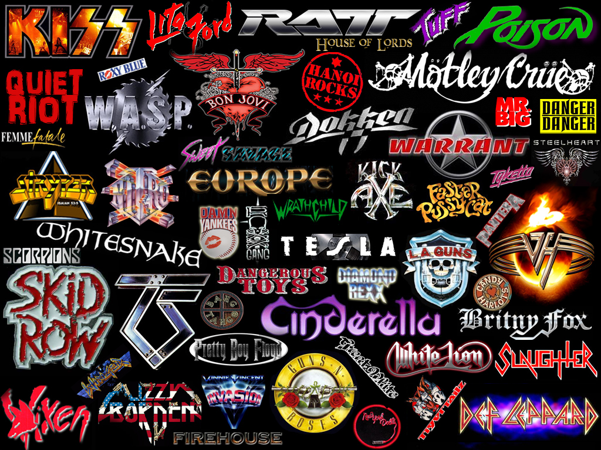
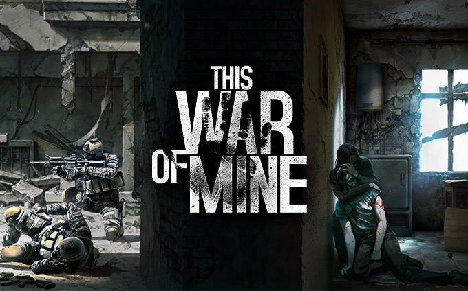

好Riff献给你，让爱传千里 — 第二集 || Guns'N'Roses - Catcher in the Rye
今天讲一点点硬摇。
Glam 也好 Hair 也好，80 年代的 Hard Rock 一直被认为是金属乐进入主流的黄金时期。很多大师级的人马直到今天还活跃在各种大型现场，影响着无数新老乐迷。
（这些乐队 logo 你还认得出多少？）

好Riff献给你，让爱传千里 — 第一集 || 香港独立乐队元老 AMK
作为半个金属党，相对于 solo，我其实更爱 riff。本来想憋一期《劲歌金 riff》出来的，想想这似乎更像是一个长期工作，所以倒不如试试一首一首来推介。
当然 riff 并不是金属党专用，同时为了装逼及反装逼，这第一集我觉得首当其冲的就是香港元老独立乐队 AMK 的这首《请让我回家》。

世上本无战事，人们只是深陷其中
近日在玩一款游戏叫《This War of Mine》，近几天才从 PC 端移植到 iPad。游戏背景是一座战火中的城市，但这次没有英雄打枪，只有几个被困在废墟里的普普通通的平民，每天在各种废墟中搜寻各种资源，确保自己可以活下去。

然而游戏的主旨却是「只靠翻垃圾堆可是没法活下去的哦少年」。为了活下去，你得精打细算地和别人交易，通宵站岗以防止被偷、被杀，然后渐渐地为了获得一个罐头、一瓶药而不得不反过来偷窃甚至杀人；而同时仅余的良知使你因此变得沮丧、崩溃，所以又不得不拿出珍贵的生存资源，换一瓶烈酒，只为能在这人间地狱里麻醉自己，多活一天是一天……
继续阅读 →